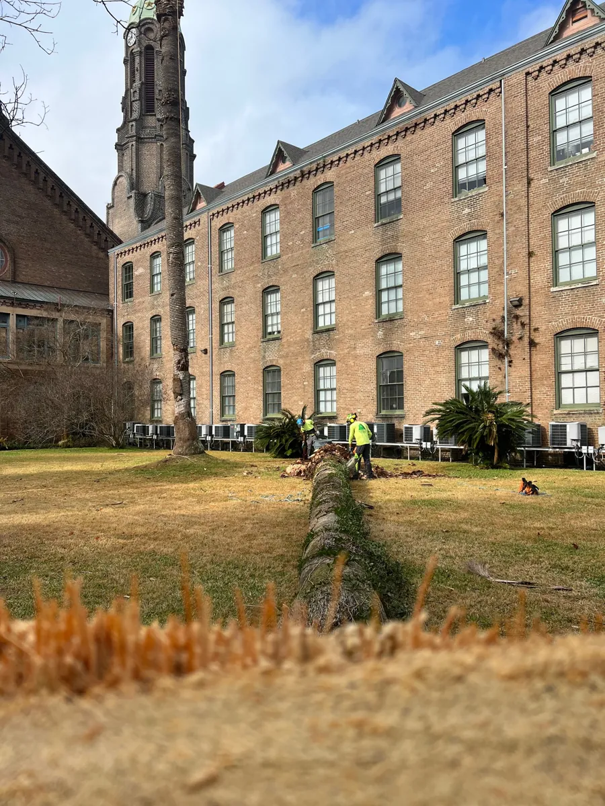
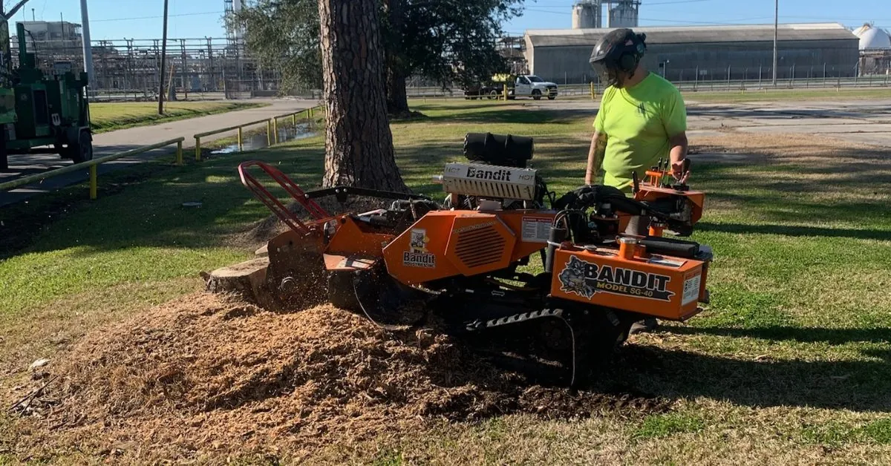

Tree Service in River Ridge, LA
Is that big tree in your yard starting to lean? After a heavy rain or strong winds in River Ridge, LA, it’s a common and valid worry. That subtle tilt can be a sign of serious trouble brewing underground, where our soft, saturated soil often fails to provide a firm anchor for heavy trees.
At A Perfect Cut Tree, we assess and handle at-risk trees in River Ridge, from emergency storm response to preventive pruning that can keep a tree from failing.
Urgent or unsafe?Call an Arborist: (504) 732-0779


Tree Services in River Ridge, LA
We handle a full range of residential and commercial tree care needs, including:
Emergency Tree Removal
When a storm leaves a fallen tree on your property, calls are answered 24/7. We remove hazards from driveways, roofs, and power lines and help with insurance claim paperwork.
Expert Tree Trimming & Structural Pruning
Proper pruning is about safety and health as much as looks. We trim to improve structure, cut wind resistance, and keep limbs away from your home and property lines, with a plan for each tree from big oaks to crepe myrtles.
Stump Grinding & Root Removal
An old stump is a tripping hazard and an invitation for pests like termites and ants. We grind stumps well below the ground level, chase out problematic surface roots, and leave your yard clean and ready for new grass or landscaping.
Tree Health Evaluations & Fertilization
If your tree shows signs of stress like wilting leaves, bark splitting, or early leaf drop, we can help. Our team inspects the root system, checks for disease or pests, and recommends the best course of action, from targeted fertilization to safe removal.
Permit Compliance & Site Consulting
Jefferson Parish and some HOAs have rules about tree removal. We can check what applies to your property and help with the permit paperwork.

River Ridge’s Unique Environment: A Challenge for Trees
Tree care in River Ridge has its own challenges. Being close to the Mississippi River means rich alluvial soil, but that ground is often soft and saturated, with a high water table that keeps roots from anchoring deeply. Roots tend to spread sideways just under the surface instead of growing down.
Hurricane Preparedness for Your Trees
Hurricane season is a fact of life in River Ridge, and tree care before it starts helps protect your home.
- Strategic Pruning: Thinning the canopy reduces wind resistance and lets strong gusts pass through the tree instead of pushing against it like a sail.
- Removing Weak Limbs: We identify and remove dead or poorly attached branches that are likely to break off and become dangerous projectiles in high winds.
- Pre-Storm Assessment: Before the season starts, have us inspect your large trees for signs of weakness, rot, or disease. A compromised tree is a liability.

Understanding the Cost of Tree Removal in River Ridge, LA
Several factors set the cost of tree removal:
- Tree Size and Condition: Larger, taller trees require more time, equipment, and crew members to manage safely. A dead or decaying tree can also be more hazardous and complex to remove.
- Accessibility: Is the tree in an open yard or a tight space next to your house, fence, or power lines? Difficult access requires more technical rigging and careful work, which influences the price.
- Scope of Work: A simple pruning job will cost less than a full removal that includes stump grinding and hauling away all debris. We provide itemized quotes so you know exactly what you are paying for.

Signs Your Tree is a Hazard and Needs Immediate Attention
Don’t wait for a tree to fail. Look for these common warning signs:
- Sudden Leaning: If a tree that was once straight is now tilting, it often indicates root failure.
- Deep Cracks or Splits in the Trunk: These are major structural defects that compromise the tree’s integrity.
- Fungus or Mushrooms Growing on the Trunk or Base: This is a strong indicator of internal rot.
- Large, Dead Branches: These can break and fall at any time, with or without wind.
- Hollow or Decaying Areas: If you can see cavities in the trunk or major limbs, the tree is seriously weakened.
If you see any of these signs, call us for a professional risk assessment.
FAQs: Tree Service in River Ridge, LA
What if a tree is leaning after a storm?
A sudden lean is a critical warning sign of root instability. Stay clear of the area and call us immediately for an emergency assessment.
Can I trim trees myself?
Trimming small, reachable branches may be fine, but cutting large limbs or attempting to shape a tree without proper knowledge and equipment can cause permanent damage or serious injury. We follow professional standards for safe, effective pruning.
Do I need a permit for tree removal in River Ridge, LA?
It depends on the tree’s size, species, and location. We will verify the requirements with Jefferson Parish and handle the filing process for you.
Can I replant after you remove a tree?
Yes. Once the stump is ground, the spot can be replanted. Choose a species that suits the space and plant it away from foundations and drainage lines.
What trees grow best in River Ridge’s soil?
Live oaks, bald cypress, sweetgum, red maples, and magnolias are all well suited to our area.

The Science of Soil Saturation and Root Failure in River Ridge
Mississippi River alluvial soils are rich in nutrients but made of fine silt and clay. When they saturate, water fills the pores between particles and pushes out the air roots need to breathe. This low-oxygen condition, called hypoxia, slowly drowns the root system.
Water also reduces the friction between soil particles that holds the ground together. Shallow-rooted trees, common here because of the high water table, depend on that grip. The root plate, the mass of soil held by the roots, can loosen and shift, which is why a tree may start leaning after a long stretch of heavy rain. That lean means the tree’s stability is compromised.
Let’s Talk About Your Trees in River Ridge, LA
If you need help after a storm or want to plan ahead for hurricane season, A Perfect Cut Tree can help, and we arrive with the right equipment to do the job safely.
What to Photograph From a Safe Distance
Photos and video show us the tree, the property around it, how we would reach it, and any visible hazards.


Tree down or a broken limb?
Skip the photos and call. Calls are answered 24/7.
(504) 732-0779Office hours: Monday to Friday 7 AM to 5 PM, Saturday 7 AM to 3 PM, closed Sunday.
Areas We Serve Around River Ridge
Also nearby: Lower Garden District, Uptown, French Quarter, Lake Vista, Lakewood, Irish Channel, Old Metairie, Old Jefferson, Elmwood, Harahan.

Ready to Show Us Your Tree?
Show us the tree. An arborist reviews what you send. Photos give us a first look. Some trees need an in-person visit before we can make a final recommendation.